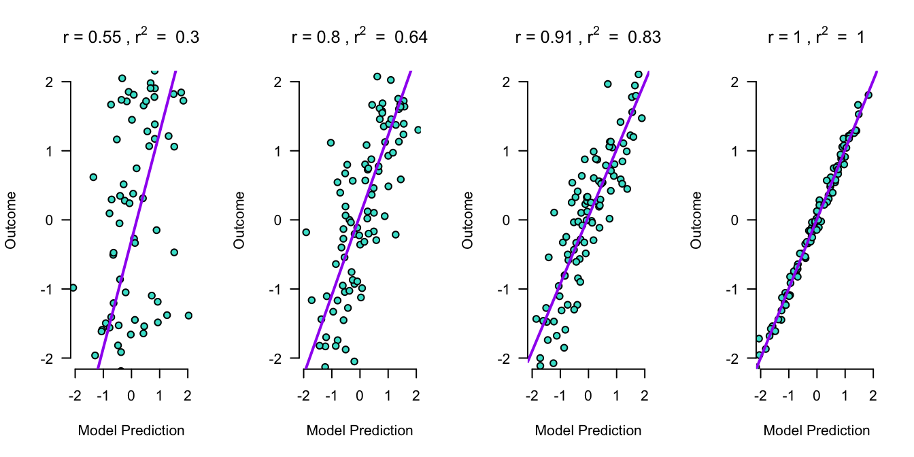
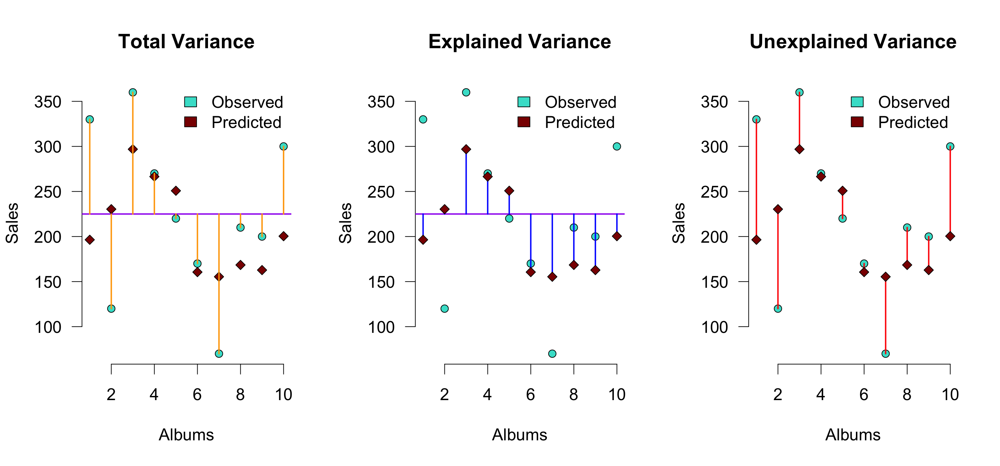

21. Multiple regression
Multiple regression
Multiple regression
\(\LARGE{\text{outcome} = \text{model} + \text{error}}\)
In statistics, linear regression is a linear approach for modeling the relationship between a scalar dependent variable y and one or more explanatory variables denoted X.
\(\LARGE{Y_i = \beta_0 + \beta_1 X_{1i} + \beta_2 X_{2i} + \dotso + \beta_n X_{ni} + \epsilon_i}\)
In linear regression, the relationships are modeled using linear predictor functions whose unknown model parameters \(\beta\)’s are estimated from the data.
Source: wikipedia
Outcome vs Model
Assumptions
A selection from Field (8.3.2.1. Assumptions of the linear model):
For simple regression
- Sensitivity
- Homoscedasticity
For multiple regressin
- Multicollinearity
- Linearity
Multicollinearity
To adhere to the multicollinearity assumption, there must not be a too high linear relation between the predictor variables.
This can be assessed through:
- Correlations
- Matrix scatterplot
- VIF: max < 10, mean < 1
- Tolerance > 0.2
Linearity
For the linearity assumption to hold, the predictors must have a linear relation to the outcome variable.
This can be checked through:
- Correlations
- Matrix scatterplot with predictors and outcome variable
Example
Predict study outcome based on IQ and motivation.
Read data
data <- read.csv('IQ.csv', header=T)
head(data) Studieprestatie Motivatie IQ
1 2.710330 3.276778 129.9922
2 2.922617 2.598901 128.4936
3 1.997056 3.207279 130.2709
4 2.322539 2.104968 125.7457
5 2.162133 3.264948 128.6770
6 2.278899 2.217771 127.5349IQ <- data$IQ
study.outcome <- data$Studieprestatie
motivation <- data$MotivatieRegression model in R
Perdict study outcome based on IQ and motivation.
fit <- lm(study.outcome ~ IQ + motivation)What is the model
fit$coefficients(Intercept) IQ motivation
-30.2822189 0.2690984 -0.6314253 b.0 <- round(fit$coefficients[1], 2) ## Intercept
b.1 <- round(fit$coefficients[2], 2) ## Beta coefficient for IQ
b.2 <- round(fit$coefficients[3], 2) ## Beta coefficient for motivationDe beta coëfficients are:
- \(b_0\) (intercept) = -30.28
- \(b_1\) = 0.27
- \(b_2\) = -0.63.
Visual
What are the expected values based on this model
\(\widehat{\text{studie prestatie}} = b_0 + b_1 \text{IQ} + b_2 \text{motivation}\)
exp.stu.prest <- b.0 + b.1 * IQ + b.2 * motivation
model <- exp.stu.prest\(\text{model} = \widehat{\text{studie prestatie}}\)
Apply regression model
\(\widehat{\text{studie prestatie}} = b_0 + b_1 \text{IQ} + b_2 \text{motivation}\) \(\widehat{\text{model}} = b_0 + b_1 \text{IQ} + b_2 \text{motivation}\)
cbind(model, b.0, b.1, IQ, b.2, motivation)[1:5,] model b.0 b.1 IQ b.2 motivation
[1,] 2.753512 -30.28 0.27 129.9922 -0.63 3.276778
[2,] 2.775969 -30.28 0.27 128.4936 -0.63 2.598901
[3,] 2.872561 -30.28 0.27 130.2709 -0.63 3.207279
[4,] 2.345205 -30.28 0.27 125.7457 -0.63 2.104968
[5,] 2.405860 -30.28 0.27 128.6770 -0.63 3.264948\(\widehat{\text{model}} = -30.28 + 0.27 \times \text{IQ} + -0.63 \times \text{motivation}\)
How far are we off?
error <- study.outcome - model
cbind(model, study.outcome, error)[1:5,] model study.outcome error
[1,] 2.753512 2.710330 -0.04318159
[2,] 2.775969 2.922617 0.14664823
[3,] 2.872561 1.997056 -0.87550534
[4,] 2.345205 2.322539 -0.02266610
[5,] 2.405860 2.162133 -0.24372667Outcome = Model + Error
Is that true?
study.outcome == model + error [1] TRUE TRUE TRUE TRUE TRUE TRUE TRUE TRUE TRUE TRUE TRUE TRUE TRUE TRUE TRUE
[16] TRUE TRUE TRUE TRUE TRUE TRUE TRUE TRUE TRUE TRUE TRUE TRUE TRUE TRUE TRUE
[31] TRUE TRUE TRUE TRUE TRUE TRUE TRUE TRUE TRUE
- Yes!
Visual

Explained variance
The explained variance is the deviation of the estimated model outcome compared to the total mean.
To get a percentage of explained variance, it must be compared to the total variance. In terms of squares:
\(\frac{{SS}_{model}}{{SS}_{total}}\)
We also call this: \(r^2\) of \(R^2\).
Why?
r <- cor(study.outcome, model)
r^2[1] 0.7527463End
Contact